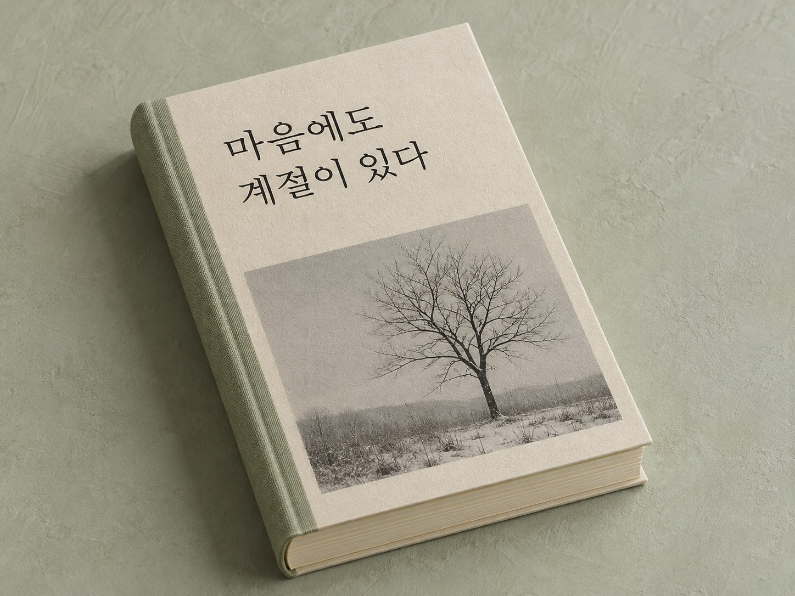

봄
새로운 시작과 설렘

출판사 소개
사계는 오늘을 살아가는 청년들의 이야기를 직접 듣고, 그 안에 담긴 생각과 경험을 책으로 만드는 기획출판사입니다.
새로운 일을 시작했을 때의 설렘, 꿈을 좇느라 한곳에 마음을 쏟았던 때, 지나온 날을 돌아보던 저녁. 같은 계절도 살아온 이야기에 따라 다른 모습으로 남습니다.
만들고 있는 첫 책
꿈을 찾아 헤매던 시간, 누군가를 만나 행복했던 순간, 아직 답을 찾지 못한 고민. 20~30대 청년들의 이야기를 듣고 저마다의 봄, 여름, 가을, 겨울을 한 권에 담습니다.
새로운 시작과 설렘
꿈을 향해 마음을 쏟던 날
지나온 시간을 돌아보는 때
기다리며 견뎌낸 시간
인터뷰
사계가 인터뷰에서 건네는 세 가지 질문입니다. 하나씩 열어 내 이야기를 떠올려 보세요.
인터뷰 신청 안내를 준비하고 있습니다.
그 계절이 나와 닮았다고 느끼는 이유를 떠올려 보세요.
그때 어디에 있었는지, 무엇이 마음을 설레게 했는지 떠올려 보세요.
기다림이 길었던 날들, 그 시간을 견디는 데 힘이 된 것이 있었나요?